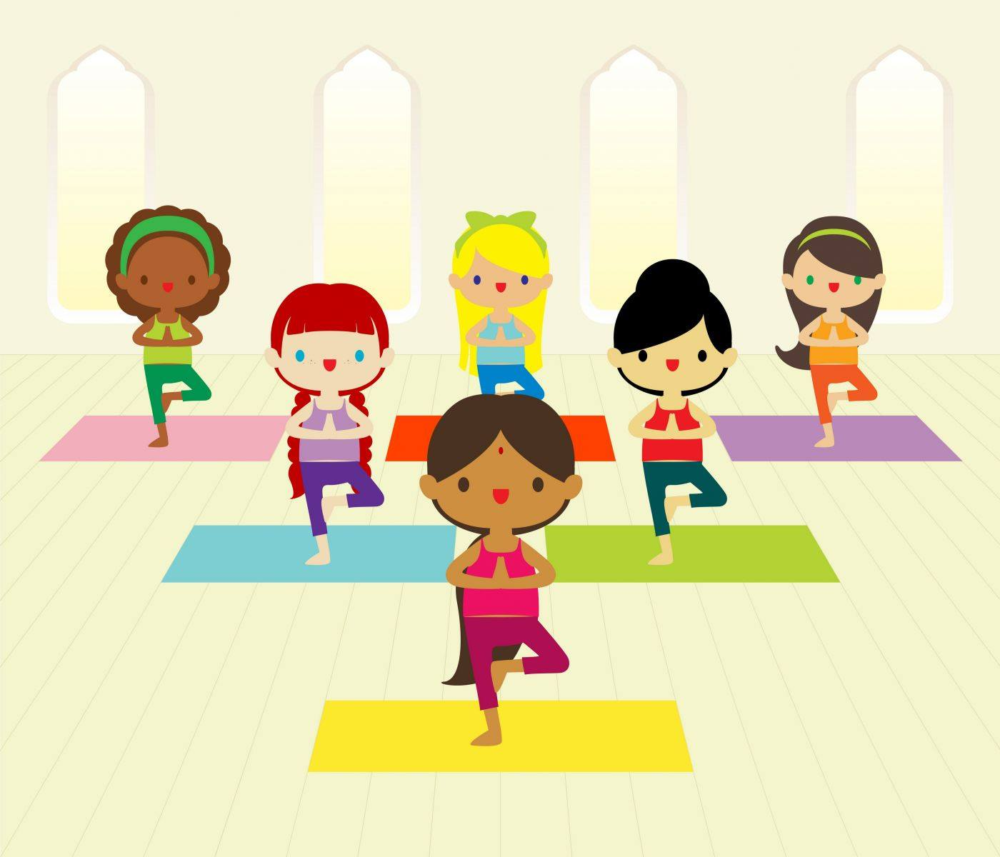

En effet si un enfant n'est pas centré sur lui même, et donc dissipé, il ne pourra pas se concentrer pour assimiler les connaissances, et donc ne pourra pas s'en servir par la suite.
Il est donc important avant chaque apprentissage que l'enfant se centre sur lui même pour faciliter celui-ci.
En effet lors d'un cours de Yoga il prend entièrement conscience de son corps, de sa mobilité, de son souffle.
Il existe pour soi même, mais également au sein d'un groupe dans lequel ils s'entraident, ils se découvrent.
Cela permet également d'avoir plus confiance en soi.
Confiance en ses capacité corporelles, oser faire ce qu'il ne faisait pas avant, voir qu'il y arrive, avec ou sans l'aide des autres, montrer que l'entraide est important, que l'on peut avoir confiance en l'autre, que l'on est en sécurité.
La confiance en soi augmentera sa prise de décision, il saura ce qui est bon pour lui ou non.
De lui montrer qu'il y a des moments où le calme est plus propice,et d'autres où il peut être plus actif, lui faire comprendre qu'il y a un temps pour chaque chose, mais qu'il aura le temps de faire ce qu'il aime.
Et peut être qu'il aimera le Yoga.... =)
Pour l'instant il n'y a pas de cours fixe pour les enfants. N'hésitez pas à me contacter, si vous êtes plusieurs un cours peut être ouvert.
Il y a cependant sur chaque vacances scolaire un atelier d'1h30 qui est prévu.